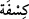

187. Şâyet doğru sözlülerden isen, üstümüze gökten azap yağdır.
“Şâyet doğru sözlülerden isen, üstümüze gökten azap yağdır.” İçinde azap olan
gökten bir parçayı üzerimize indir ve at. Yâni Rabbine söyle de atsın. Onlar bu sözü
istihzâ ve yalanlama yoluyla söylediler.
“
” kelimesi parça anlamındaki “
”nin çoğuludur. Âyette “sema/gök” ile
kasdedilen, bulut veya gölgedir. Belki de bu, Allah’tan korkma emrinin îmâ ettiği
tehdide onların bir cevabıdır.
188. Şuayb: “Rabbim yaptıklarınızı en iyi bilendir.” dedi.
Şuayb: “Rabbim yaptıklarınızı” yaptığınız inkar ve günahları, onlar sebebiyle hak
ettiğiniz azâbı “en iyi bilendir.” Belirlenen vakit geldiğinde mutlaka onu indirecektir.
“dedi.”
Zâlime verilen on günlük mühlete bak.
Pusudan an be an ona ulaşan fitne ve âfeti gör
Başlangıçta hep eğlence ve naz içindeydi
Âkıbetini gör ki hep yanıp yakılmadadır
Rivâyete göre Şuayb (a.s.)’ın kavmi inkâr ve büyüklenmede sınırı aşınca, Hak
Sübhânehû ve Teâlâ onların üzerine geceli gündüzlü yedi gün çetin bir sıcaklık
gönderdi. Kuyu ve çeşmelerin suyu kaynamaya başladı. Nefesleri tıkandı, evlerine
girdiler. Hararet daha da arttı. Ormanlara yöneldiler, her biri bir ağacın dibine yığılıp
kaldı. Sıcaktan kaçmak isterlerken havada siyah bir bulut belirdi. O buluttan serin bir
rüzgâr esmeye başladı. İnsanlar sevinçle diğerlerine: “Gelin, bulutun gölgeliği altında
rahata erin.” diye seslendiler. Hepsi bulutun altında toplanır toplanmaz, o buluttan bir
ateş çıktı ve hepsini yaktı. Bununla ilgili olarak Hak Sübhânehû ve Teâlâ şöyle buyurur:
189. Velhasıl onu yalancı saydılar da, kendilerini o gölge gününün azâbı
yakalayıverdi. Gerçekten o, muazzam bir günün azâbı idi!
“Velhasıl onu yalancı saydılar da,” yâni delil açıkça belli olup ve şüphe ortadan
kalktıktan sonra yalancı saymakta ısrar ettiler de teklif ettikleri şekilde “kendilerini o
gölge gününün azâbı yakalayıverdi.”
Onlar, “gökten” (187. âyet) sözüyle ya bulutu kasdetmişlerdir ki buna göre mânâ